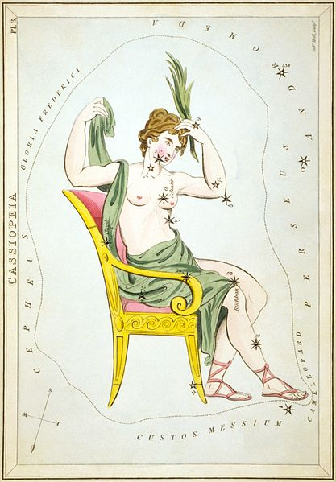
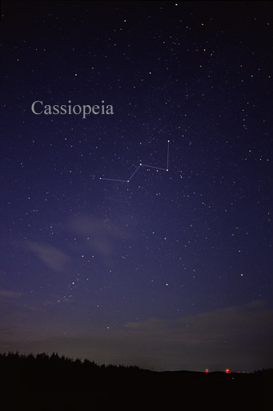

I think it's weird that we hold on to these ancient ways of grouping the
stars.
Cassiopeia, to me, is a really pretty word, but the ancient
story of who she was doesn't seem to do
justice to the stars that
bear the name. Cassiopeia is basically this queen (mother of Andromeda)
who announced that she is more beautiful than all of Poseidon's daughters.
Which made Poseidon
mad and, since he's a God, he punished her for eternity
by forcing her to sit on a throne that revolved
around the sky forever
so that half the time she would be upside down.
Like so:
But to me, just a giant M or W:
